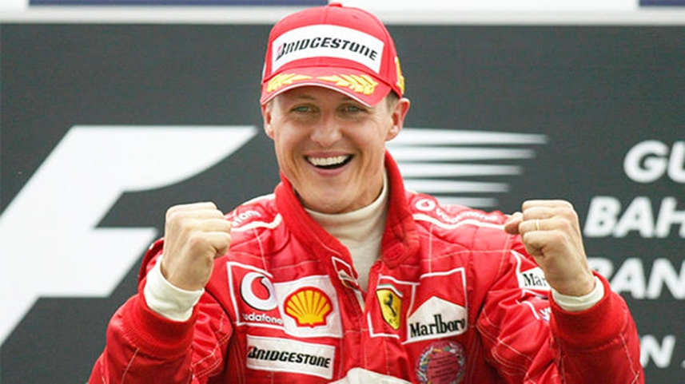

Nama Saya Muhammad Nirwan Habibi, Lahir Di Tahun 2001, Anak Ke 2 Dari 2 Bersaudara, Berusia 17 Tahun.Saya Lahir Di Muara Aman Sebuah Daerah Di Provinsi Bengkulu Di Daerah Sumatra, Indonesia. Saya Lahir Pada Tahun 2001. Saya Berdomisili Di Kota Bogor daerah Bantarkemang Bogor Timur.
Menempuh Pendidikan Sekolah Dasar 1 Bantarkemang, SMP 2 Bogor dan Kini Bersekolah di SMK-SMAK BOGOR Sebagai Chemical Analyst Pendidikan Awal Saya Pada Saat Berumur 5 Tahun Yaitu Bersekolah di Taman Kanak-Kanak Assaidiyah . Disana Saya Bersekolah Selama 2 Tahun. Kemudian Di Tahun 2007 Saya Memasuki Jenjang Sekolah Dasar. Selama 5 Tahun Saya Bersekolah di SDN 1 Cipanas. Kemudian Saat Kelas 6 SD Saya Pindah Dari Cipanas Ke Kota Bogor dan Melanjutkan di SDN Bantarkemang 1. Selanjutnya Pada Tahun 2013 Saya Bersekolah Di SMPN 2 Kota Bogor. Lalu Pada Tahun 2016 Saya Melanjutkan Jenjang Pendidikan Saya di SMK-SMAK Bogor.
Saya adalah salah satu dari fans ajang balapan F1 atau biasa kita kenal dengan Formula One. Salah satu pembalap F1 Terkenal dan merupakan legenda dari ajang itu sendiri adalah tidak lain tidak bukan Michael Schumacher. Dengan gelar juara dunia pembalap terbanyak yang pernah diraih oleh seorang pembalap yaitu 7 Kali WDC (World Drivers Championship). Gelar ini diraihnya pada tahun 1994,1995,2000,2001,2002,2003, dan 2004. Mengapa saya mengagumi Michael Schumacher? Karena saya mengagumi keahlian mengemudinya, dan kecepatannya ketika menggeber mobil balap F1. Apalagi mobil Ferrari yang dikendarainya.
Saya Igin Sekali Mengunjungi 2 Tempat. Yang Pertama Saya Ingin Sekali Mengunjungi Balapan F1 yaitu Di Monaco Mendengar Mobil Balap Dengan Suaranya Yang Khas, Atmosfir Balapan, Serta Pacuan Mesin Yang Sangat Seru Untuk Dinikmati.

Lalu Saya Juga Ingin Sekali Mengunjungi Markas Klub Sepakbola Kesukaan Saya Yaitu Old Trafford, Kandang Dari Klub Manchester United. MengunjungI Sir Alex Ferguson & Stretford End Merupakan Suatu Keinginan Terbesar Saya.